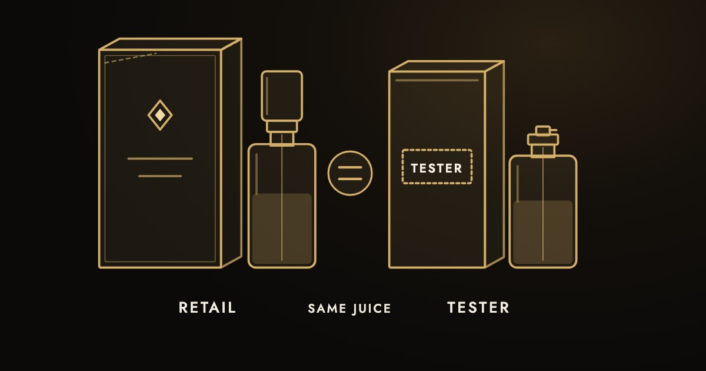

Buying smart · Guide
Perfume testers: why they cost less, and whether they're legit
Quick answer
A perfume tester is a genuine, brand-made bottle meant for sampling at the counter. It holds the same fragrance as the retail bottle in plain packaging, so it costs less: typically 10–30% less in this shop's catalogue. Brands do not authorise testers to be sold, so reselling them is a grey area, not an official channel.
Testers are some of the best-value bottles in perfume, and some of the most misunderstood. Here is a plain account of what they are, why they cost less, why brands say they are not for sale, how they reach resellers, and whether buying one is legit.

The short answer
Genuine product, grey-area trade
A tester is a genuine, brand-made bottle meant for sampling at the counter. It holds the same fragrance as the retail bottle, in plainer packaging, at a lower price. But brands don't intend testers to be sold, and in some countries courts have sided with brands against resellers. So a tester is not a fake, and it is not an officially approved retail product either. We would rather say so plainly.
What a tester is
A tester is a bottle that a brand supplies to perfume shops and department-store counters so customers can try a fragrance before they buy it. The brand makes it and fills it with its fragrance, then packs it for the counter instead of the shelf.
You can usually recognise one by its packaging:
- a plain white or brown carton, sometimes stamped “Tester” or “Not for sale”, or no box at all
- no cellophane wrap
- a plain cap, or no cap
- a bottle that is otherwise the same as the retail one
Why testers cost less
You are not saving on the liquid. You are saving on everything around it.
- Simpler packaging. No gift box, no cellophane, often no cap. Those things cost money and the saving is passed on.
- Never meant as retail stock. A tester isn't priced as a shelf product, so there is no retail margin built into it.
- How it reached the seller. The route a tester takes to a reseller (see below) is shorter and cheaper than the normal retail chain.
On our catalogue, where a tester and the retail bottle of the same size are both listed, the tester is typically 10–30% cheaper, with about 20% in the middle. Other sellers advertise bigger gaps; it varies by brand and by stock.
Why brands say testers aren't “for sale”
Brands give testers to retailers as promotional material, to be used on the counter and not sold on. Many are printed or stamped “tester” or “not for sale”. Brands hold that line for two reasons: testers sold at a discount undercut their authorised shops, and a buyer might think they are getting a full retail pack, with box, cap and the brand's after-sales backing.
How the law treats it differs from place to place:
- European Union. In 2010 the EU's Court of Justice looked at Coty testers marked “demonstration” and “not for resale” (Coty Prestige Lancaster v. Simex Trading, case C-127/09). It said such labels negate any presumption that the brand consented to the testers being marketed, which leaves the brand free to object to their resale as trademark infringement.
- India. In July 2023 the Delhi High Court, in Coty Germany GmbH v. Xeryus Retail Pvt. Ltd., permanently barred two websites from selling Calvin Klein testers and ordered ₹1 lakh to be paid to the brand. The seller did not contest the case, and commentators describe the finding as an unfair trade practice. It appears to be the first Indian ruling of its kind.
- Marketplaces. Some online platforms ban tester listings outright, whatever the law says.
How testers reach resellers anyway
Brands ship testers in large numbers to distributors, department stores and chains. Over time counters replace worn or empty testers, ranges are refreshed, shops close and distributors are left with surplus. That stock gets sold on to wholesalers, liquidators and discount sellers, and from there it reaches the open market.
That is the broad path, and brands don't approve of it. We can't speak for every seller. What we can say is what you will always see from us: each tester is listed as a Tester, with anything missing noted (for example “No Box”), and the photo beside it may show the retail bottle, which the listing makes clear.
So, is it legit?
It depends on which question you are asking, so here are straight answers to each.
- Is it genuine? Yes. A tester is the brand's own product with the brand's own fragrance. That is the difference from a fake, which is a copy made by someone else.
- Does the brand approve of its resale? No. Brands don't authorise testers to be sold, and in some countries they have taken sellers to court and won. Calling it a grey area is accurate. It is not an official channel.
- Is the person buying one at risk? The cases we found were brought by brands against sellers, not against people who bought a bottle to wear. This is general information, not legal advice, and if you are buying testers to resell them, check the rules where you operate.
- What do you give up? The box, gift-readiness, sometimes the cap, and anything the brand offers to retail customers.
What our guarantee covers on a tester
Our authenticity guarantee covers whether the fragrance is genuine. It does not cover packaging differences, because a tester is sold exactly as its listing describes. See the claim rules.
Who should buy a tester?
A good fit if you want the fragrance more than the box, you are replacing a bottle you already know and love, or you want to try a pricier house for less.
Better to choose retail if it is a gift, you collect, you need the original box and cap, or you want to deal with the brand's own after-sales support.
Before you buy a tester
- The listing clearly says Tester.
- You have read the note beside the size, such as “No Box” or “No Cap”.
- You know the photo may show the retail bottle, and the tester arrives in plain packaging.
- You have asked about the cap and the fill level if either matters to you.
- You are not buying it as a gift.
- You know the usual checks for any bottle. See How to tell genuine perfume from a fake.
Common questions
Does a tester smell the same as the retail bottle?
It should, because it is the same fragrance. Any difference you notice is more likely to come from the batch, the age or how it was stored than from the word “tester”.
Does a tester last as long as a retail bottle?
Longevity depends on the fragrance, its strength and your skin, not on the box it came in.
Why does a tester have no cap?
Counter testers are sprayed all day, so the cap is often left off. Some come with one. The note beside the size tells you.
How do I know a tester isn't a fake?
Use the same checks as for any bottle: the glass, the batch code, the sprayer and the liquid. A plain box is normal for a tester, but messy printing or a sloppy sprayer is still a warning sign.
Can I give a tester as a gift?
It is better not to. There is no gift box, and the recipient may expect a retail pack. Choose a retail bottle instead.
Sources and further reading. Humphreys & Co., on the 2010 EU ruling · Kluwer Trademark Blog, on the 2023 Delhi High Court ruling. Both open in a new tab. The information here is general and is not legal advice.